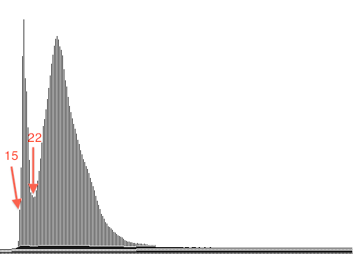
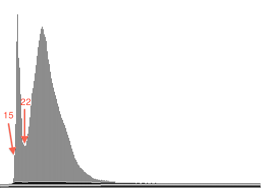

Diane Delallée - M1 Informatique
TD3 : animation - seuillage - stretching
1.Animation de seuillage
a.Animation infinie
Afin que l'application recommence indéfiniment, il faut modifier la partie "Expose" du programme td3_animation_seuillage.c. Il faut rajouter un while(1) juste avant la boucle for parcourant toutes les valeurs des pixels. De ce fait, la valeur 1 étant toujours vraie, la boucle while s'éxecute indéfiniment, et l'animation ne cesse de recommencer.
b.Boucle d'évènement
Bien que l'image ait été cliqué, le programme étant rentré dans le cas Expose et celui bouclant à l'infini, il est désormais impossible de rentrer dans le cas ButtonPress.
De ce fait, le clic de la souris n'est jamais pris en compte et seul le bouton de fermeture de la fenêtre permet d'arreter le programme.
2.Stretching linéaire de précision
Afin d'appliquer un stretching linéaire à l'image, il faut appliquer la formule suivante :
lorsque la valeur du pixel est inférieur à "a", on met le pixel a 0.
Lorsque la valeur du pixel est supérieur à "b" on met le pixel à 255, sinon celui-ci devient : 255*(pixel-a/b-a).
 Ici, "int aa" représente la valeur de a, et "int ba" représente la valeur de b désirée.
Ici, "int aa" représente la valeur de a, et "int ba" représente la valeur de b désirée.
 Afin de trouver les valeur de a et b, on regarde l'histogramme de l'image (cf TD précédent), et on cherche le pic pouvant correspondre aux pixelx ayant une valeur sombre représentant la rivière.
Ici on trouve a = 15 et b = 22.

Après avoir retravaillé l'image, de nombreux éléments apparaissent comme :
- des bateaux avec leur sens de navigation :
- des écoulements en provenance de la Terre :
- des différences de températures :
- des différences de calibration des CCDs de l’instrument HRV de SPOT
En effet, on remarque que la texture de la rivière n'est pas nette, celle-ci possède de nombreuses bandes verticales.
Afin de trouver les valeur de a et b, on regarde l'histogramme de l'image (cf TD précédent), et on cherche le pic pouvant correspondre aux pixelx ayant une valeur sombre représentant la rivière.
Ici on trouve a = 15 et b = 22.

Après avoir retravaillé l'image, de nombreux éléments apparaissent comme :
- des bateaux avec leur sens de navigation :
- des écoulements en provenance de la Terre :
- des différences de températures :
- des différences de calibration des CCDs de l’instrument HRV de SPOT
En effet, on remarque que la texture de la rivière n'est pas nette, celle-ci possède de nombreuses bandes verticales.
3.Stretching par régions
a.Phytoplancton
On va ici raisonner comme dans l'exercice précédent, cependant on va travailler sur les trois canaux en même temps, on va donc adapter le code pour qu'il agisse différement en fonction du canal.
On aura au préalable initialisé les valeurs (aa,ba), (ab, bb), (ac,bc) avec les valeurs désirées de a et b correspondant respectivement aux canaux rouge, vert et bleu.
 En reprenant les histogrammes de chaque canal, on trouve les valeurs suivantes des variables a et b :
canal rouge : a = 0 et b = 110
canal vert : a = 20 et b = 102
canal bleu : a = 20 et b = 125
canal rouge :
canal vert :
En reprenant les histogrammes de chaque canal, on trouve les valeurs suivantes des variables a et b :
canal rouge : a = 0 et b = 110
canal vert : a = 20 et b = 102
canal bleu : a = 20 et b = 125
canal rouge :
canal vert :  canal bleu :
on obtient alors l'image suivante :
canal bleu :
on obtient alors l'image suivante :
b.Islande
En appliquant le même raisonnement qu'à la question précédente, on trouve les valeurs suivantes :
canal rouge : a = 41 et b = 131
canal vert : a = 63 et b = 128
canal bleu : a = 55 et b = 133
canal rouge :
canal vert :  canal bleu :
On obtient la représentation ci-dessous :
canal bleu :
On obtient la représentation ci-dessous :

4.Stretching adapté aux besoins de l'utilisateur
Dans cet exercice, il faut encore une fois trouver les valeurs de a et b, or ici il faut chercher les "pics" correspondant aux éléments que l'on veut étudier.
a.Pilote
On obtient alors les valeurs de a et b suivantes :
canal rouge : a = 24 et b = 43
canal vert : a = 27 et b = 55
canal bleu : a = 55 et b = 75
canal rouge :
canal vert :
canal bleu :
En éxecutant le programme skelet.c on a l'image suivante :  On constate d'ailleurs, qu'il y a un avion qui s'apprête à décoller sur la partie droite de la piste..
On constate d'ailleurs, qu'il y a un avion qui s'apprête à décoller sur la partie droite de la piste..
b.Exploitant agricole
Pour étudier les champs avoisinant l'aéroport, on procède comme pour la piste, mais en recherchant des pics plus clairs.
On obtient l'image ci-contre avec les valeurs :
canal rouge : a = 20 et b = 77
canal vert : a = 18 et b = 70
canal bleu : a = 39 et b = 77
canal rouge :
canal vert :
canal bleu :
 ----------------------------------------------------------------------------------------------------------------------------------------------------------------------------------------------------------------------------------------------------
----------------------------------------------------------------------------------------------------------------------------------------------------------------------------------------------------------------------------------------------------